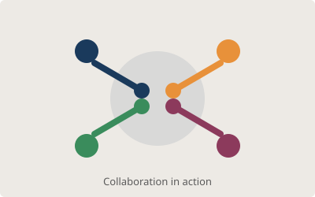
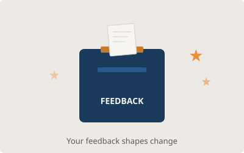
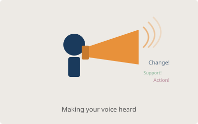

Our Role
What the Staff-Student Liaison Committee does and why it matters
What Is the SSLC?
The Staff-Student Liaison Committee (SSLC) is a formal channel through which students can raise issues, provide feedback, and contribute to decisions that affect their academic experience. Every department in the University of Sheffield has an SSLC, as required by the University’s Student Services.
The committee meets at least once per semester and includes elected student representatives from each year group alongside academic staff members. Issues discussed include module content, assessment methods, timetabling, facilities, and student welfare. Outcomes are recorded in official minutes and shared with the department.
Test Your Knowledge!
How much do you know about staff-student committees? Look at each image, think of your answer, then click “Reveal Answer” to check.

Question 1: This image shows people working together. What is the main benefit of having both staff AND students on the committee?
Reveal Answer
Having both staff and students ensures that decisions are informed by multiple perspectives. Students bring first-hand experience of courses, while staff provide institutional context and the power to implement changes.

Question 2: This shows a feedback box. Name two ways students can submit feedback to the SSLC besides attending meetings.
Reveal Answer
Students can: (a) contact their year representative directly, (b) use the contact form on this website, (c) email the committee, or (d) submit anonymous feedback through the department’s online feedback system.

Question 3: This person is making their voice heard. What happens after an issue is raised at an SSLC meeting?
Reveal Answer
The issue is recorded in the meeting minutes. Relevant staff members are assigned actions to address it. Progress is reviewed at the following meeting to ensure accountability and follow-through.